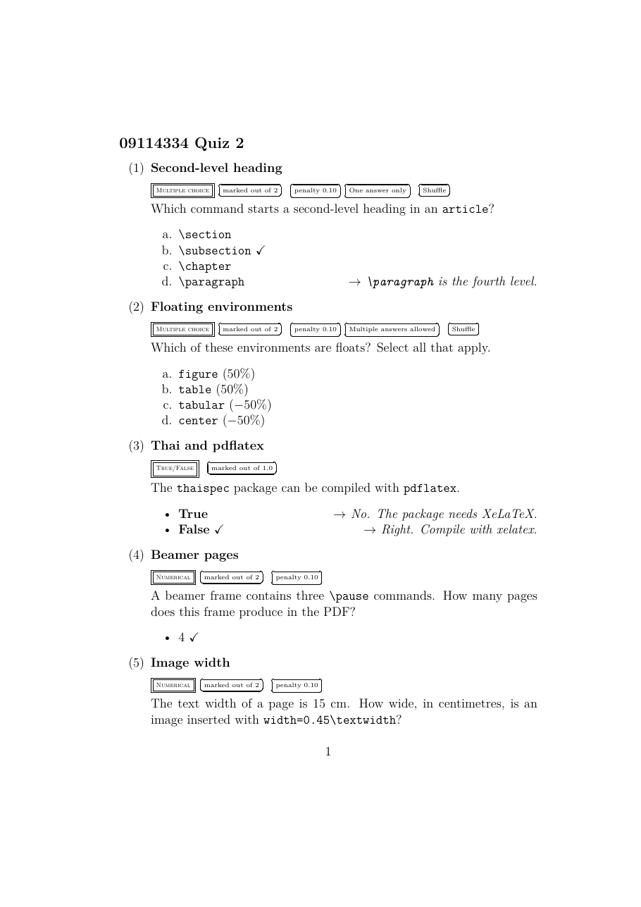
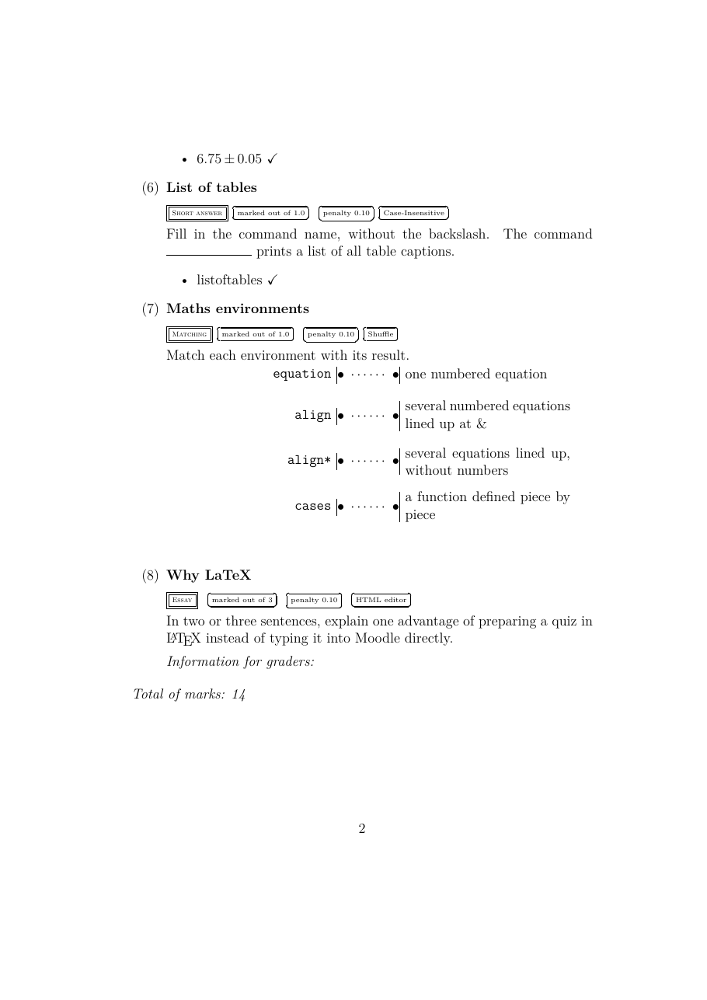

วัตถุประสงค์
Workshop นี้เป็นงานเสริม ไม่มีสไลด์บทเรียนประกอบ คำสั่งใหม่ทุกคำสั่งอธิบายไว้ใน Part A เมื่อจบแล้ว นักศึกษาจะสามารถ
- เขียนคำถามสำหรับระบบ Moodle ด้วยแพ็กเกจ
moodleภายในสภาพแวดล้อมquizได้ - สร้างคำถาม 6 ชนิด ได้แก่ ปรนัย (
multi) ถูกหรือผิด (truefalse) ตัวเลข (numerical) เติมคำสั้น (shortanswer) จับคู่ (matching) และอัตนัย (essay) ได้ - กำหนดคะแนน ผลป้อนกลับ (feedback) คำตอบหลายข้อ และค่าคลาดเคลื่อนของคำตอบได้
- อธิบายความสัมพันธ์ระหว่างไฟล์ PDF ที่ใช้ตรวจทานกับไฟล์
-moodle.xmlที่ใช้นำเข้าได้ - นำเข้าไฟล์ XML สู่คลังข้อสอบของ Moodle ได้
ไฟล์ที่ได้รับ
ดาวน์โหลด moodle_quiz.zip แล้วแตกไฟล์ไว้ในที่ที่หาง่าย จะได้โฟลเดอร์ moodle_quiz ดังนี้
moodle_quiz/
├── doc.pdf ชิ้นงานต้นแบบ (ภาพตรวจทานคำถาม 8 ข้อ 2 หน้า)
├── warmup.tex ไฟล์สั้น ๆ สำหรับ Part A
├── main.tex ไฟล์เริ่มต้นสำหรับ Part B
└── content.txt เนื้อหาทั้งหมดของ Part B ไม่ต้องพิมพ์ใหม่ดูไฟล์แยกทีละไฟล์ได้ที่
warmup.tex,
main.tex,
content.txt
เตรียมเครื่อง
ประมาณ 5 นาทีเปิดโฟลเดอร์ moodle_quiz ใน Sublime Text และเปิดเทอร์มินัลในโฟลเดอร์เดียวกัน แพ็กเกจ moodle มากับ TeX Live และ MiKTeX อยู่แล้ว
คำถามใน Workshop นี้เป็นภาษาอังกฤษ จึงคอมไพล์ด้วย pdflatex ครั้งเดียวก็พอ
$ pdflatex warmup.texwarmup.pdf สำหรับผู้สอนตรวจทาน (แสดงคำตอบที่ถูก คะแนน และผลป้อนกลับ) และ warmup-moodle.xml สำหรับนำเข้า Moodle
ข้อความ Package ifplatform Warning ... shell escape is disabled ใน log มาจากภายในแพ็กเกจ ไม่มีผลต่องานนี้
อุ่นเครื่อง
ประมาณ 45 นาทีใช้ไฟล์ warmup.tex (คำถามเรื่องระบบสุริยะ) ทำทีละข้อ แล้วสั่ง pdflatex warmup.tex ทุกครั้งที่แก้
- A0 คอมไพล์
warmup.texตามที่ได้รับ เปิดwarmup.pdfแล้วเปิดwarmup-moodle.xmlใน Sublime Text{Solar System}และ{Largest planet}ไปปรากฏที่ใดใน XML (ดูแท็ก<category>และ<name>) และ\item*กลายเป็นค่าfractionเท่าใด - A1 คะแนนและผลป้อนกลับ เปลี่ยนบรรทัดแรกของคำถามเป็น
\begin{multi}[points=2]{Largest planet}และเปลี่ยนตัวเลือกแรกเป็น\item[feedback={Mars is smaller than Earth.}] Marsผลป้อนกลับแสดงใน PDF ที่ใด และนักศึกษาจะเห็นข้อความนี้เมื่อใดใน Moodle
- A2 ตอบได้หลายข้อ เพิ่มคำถามใหม่ต่อจากข้อแรก
\begin{multi}[multiple]{Rocky planets} Which planets are rocky? Select all that apply. \item* Mercury \item* Earth \item Saturn \item Neptune \end{multi}PDF แสดงเปอร์เซ็นต์ของแต่ละตัวเลือกเท่าใด ถ้านักศึกษาเลือกทุกข้อจะได้คะแนนเท่าใด
- A3 ถูกหรือผิด
\itemตัวแรกคือผลป้อนกลับเมื่อตอบ True ตัวที่สองคือเมื่อตอบ False และ*บอกว่าข้อใดถูก\begin{truefalse}{Pluto} Pluto is still counted as a planet. \item[feedback={No. Pluto has been a dwarf planet since 2006.}] \item[feedback={Right. Pluto is a dwarf planet.}]* \end{truefalse} - A4 ตัวเลข เพิ่มสองคำถาม คำถามแรกตอบเป็นจำนวนเต็ม คำถามที่สองยอมให้คลาดเคลื่อนได้ 1 วัน
PDF แสดงคำตอบ 8 เป็น\begin{numerical}{Number of planets} How many planets are in the Solar System? \item 8 \end{numerical} \begin{numerical}{Orbit} About how many days does Earth take to orbit the Sun? \item[tolerance=1] 365.25 \end{numerical}8 (−50%)ขณะที่ใน XML คำตอบนี้มีfraction="100"ถูกต้อง เป็นเพราะภาพตรวจทานใช้ค่าที่ค้างจากคำถาม A2 ให้เขียน\item[fraction=100] 8เพื่อให้ PDF แสดงเครื่องหมายถูกถ้าใครตอบ 364 หรือ 367 สำหรับคำถาม Orbit จะได้คะแนนหรือไม่
- A5 เติมคำสั้น
\blankวางช่องว่างไว้กลางประโยค\begin{shortanswer}{Closest planet} The planet closest to the Sun is \blank. \item Mercury \item Mercury. \end{shortanswer}ทำไมจึงต้องใส่คำตอบ
Mercury.ที่มีจุดด้วย ตัวพิมพ์เล็กและใหญ่มีผลหรือไม่ (ดูกรอบ Case-Insensitive ใน PDF) - A6 จับคู่ ใช้
\answerคั่นระหว่างคำถามย่อยกับคำตอบ\begin{matching}{Planet features} Match each planet with its feature. \item Mars \answer the red planet \item Saturn \answer bright rings \item Venus \answer the hottest surface \end{matching} - A7 อัตนัยและคณิตศาสตร์ เพิ่มคำถามอัตนัยที่มีสูตร แล้วเปิด XML หาประโยคนี้
\begin{essay}{Gravity on the Moon} Explain why gravity on the Moon is about $\frac{1}{6}$ of the gravity on Earth. \end{essay}$\frac{1}{6}$ถูกแปลงเป็นอะไรใน XML และ Moodle จะแสดงสูตรนี้ได้อย่างไร - A8 ทำให้ผิดโดยตั้งใจ ทำทีละข้อในไฟล์
warmup.texฉบับเดิม แล้วแก้กลับ- เขียนตัวเลือกด้วย
\verbเป็น\item* \verb|Jupiter|! Missing } inserted. l.19 \end{multi} ! Extra }, or forgotten \endgroup. ! LaTeX Error: \verb illegal in argument. - ลบ
{Largest planet}ออกจาก\begin{multi} - ลบ
*ออกจาก\item* Jupiter
ข้อ b และ c มีข้อความผิดพลาดหรือไม่ ชื่อคำถามและตัวอักษรตัวแรกของคำถามในข้อ b เป็นอย่างไร และคำถามในข้อ c ใน XML มีคำตอบที่ได้ 100 หรือไม่
- เขียนตัวเลือกด้วย
*, points, feedback, multiple และ tolerance ทำอะไร
และ (3) ทำไมต้องตรวจ PDF ทุกครั้ง ในเมื่อหลายความผิดพลาดไม่มีข้อความเตือน
งานหลัก
ประมาณ 40 นาทีเปิด main.tex และคัดลอกเนื้อหาจาก content.txt มาวาง เพื่อสร้างชุดคำถาม 8 ข้อที่ให้ภาพตรวจทานเหมือน doc.pdf มากที่สุด
$ pdflatex main.tex

คำแนะนำ
| ส่วนของชิ้นงาน | สิ่งที่ต้องใช้ |
|---|---|
| ส่วนนำ | amsmath และ moodle (ต่อจาก fontenc และ lmodern ที่มีอยู่แล้ว) |
| ชุดคำถาม | \begin{quiz}{09114334 Quiz 2} |
| ข้อ 1–2 | multi, points, feedback, multiple |
| ข้อ 3 | truefalse พร้อมผลป้อนกลับทั้งสองแบบ |
| ข้อ 4–5 | numerical, fraction=100, tolerance |
| ข้อ 6 | shortanswer, \blank |
| ข้อ 7 | matching, \answer, \& สำหรับเครื่องหมาย & |
| ข้อ 8 | essay, points, \LaTeX |
| ชื่อคำสั่งในคำถาม | \texttt{\textbackslash subsection} และ \texttt สำหรับชื่อสภาพแวดล้อม |
คำใบ้เพิ่มเติม (เปิดดูเมื่อติด)
- เทียบบรรทัด
Total of marksท้าย PDF กับต้นแบบ ถ้าได้ 14 แสดงว่าคะแนนทุกข้อถูกต้อง - ใน
truefalseตำแหน่งของ*อยู่หลังวงเล็บเหลี่ยม เช่น\item[feedback={...}]* - ข้อ 6 ใช้
\blank\(มี\ตามด้วยช่องว่าง) เพื่อไม่ให้ช่องว่างหลังคำสั่งหายไป - เปิด XML ตรวจว่ามีคำถามครบ 8 ข้อ ด้วยการค้นคำว่า
<question typeใน Sublime Text
ส่งงาน
เปลี่ยนชื่อไฟล์เป็น moodle_quiz_<รหัสนักศึกษา>.tex แล้วสั่ง pdflatex moodle_quiz_<รหัสนักศึกษา>.tex ส่งไฟล์ .tex, .pdf และ moodle_quiz_<รหัสนักศึกษา>-moodle.xml
รายการตรวจสอบก่อนส่ง
นำเข้าสู่ Moodle
ประมาณ 10 นาทีขั้นตอนนี้ต้องมีบัญชีผู้สอน (หรือผู้ที่แก้ไขคลังข้อสอบได้) ในรายวิชาบน Moodle ถ้าไม่มี ให้อ่านขั้นตอนไว้ใช้ภายหลัง ชื่อเมนูอาจต่างกันเล็กน้อยตามรุ่นของ Moodle
- เข้ารายวิชา แล้วเปิดคลังข้อสอบ (Question bank) จากเมนู More ของรายวิชา
- เลือกนำเข้า (Import) จากรายการเมนูของคลังข้อสอบ
- ในส่วนรูปแบบไฟล์ เลือก Moodle XML format
- ลากไฟล์
-moodle.xmlมาวาง แล้วกดปุ่ม Import - Moodle แสดงรายการคำถามที่นำเข้า กด Continue คำถามทั้งหมดจะอยู่ในหมวดชื่อเดียวกับ
\begin{quiz}{...} - สร้างแบบทดสอบ (Quiz) ในรายวิชา แล้วเพิ่มคำถามจากหมวดนั้น
.tex คอมไพล์ แล้วนำเข้าใหม่ ไม่ควรแก้ใน Moodle เพราะไฟล์ต้นฉบับจะไม่ตรงกับคำถามในระบบ
ท้าทาย
ไม่บังคับ · ประมาณ 20–30 นาทีทำเพิ่มในไฟล์ใหม่ ข้อใดก็ได้
- C1 เพิ่มคำถามแบบเติมคำหลายช่องในประโยคเดียว (cloze) ด้วยสภาพแวดล้อม
clozeตามตัวอย่างในคู่มือtexdoc moodle - C2 ทำคำถามภาษาไทย โดยใช้
thaispecกับฟอนต์ Laksaman และคอมไพล์ด้วยxelatexเหมือน Workshop เอกสารภาษาไทยและคำสั่งที่สร้างเอง แล้วเปิด XML ตรวจว่าภาษาไทยถูกต้อง - C3 ใช้ตัวเลือก
sanctionของmultiให้ตอบผิดแล้วถูกหักคะแนน และเปรียบเทียบเปอร์เซ็นต์ใน PDF - C4 สร้างคำสั่ง
\cmdด้วย\newcommand{\cmd}[1]{\texttt{\textbackslash #1}}แล้วใช้\cmd{subsection}แทนการพิมพ์ยาวคำสั่งที่สร้างเองถูกแปลงลงใน XML อย่างไร
ข้อผิดพลาดที่พบบ่อย
| อาการ | สาเหตุและวิธีแก้ |
|---|---|
! LaTeX Error: \verb illegal in argument. |
ใช้ \verb ในคำถามหรือคำตอบ ให้ใช้ \texttt{\textbackslash ...} แทน |
| ชื่อคำถามเป็นตัวอักษรตัวเดียว และคำถามขาดตัวอักษรตัวแรก | ลืมชื่อคำถามในวงเล็บปีกกาหลัง \begin{multi} หรือสภาพแวดล้อมคำถามอื่น |
| ทุกตัวเลือกได้ 0% และไม่มีเครื่องหมายถูก | ลืม * หลัง \item ของคำตอบที่ถูก |
คำตอบของ numerical ใน PDF แสดงเปอร์เซ็นต์แปลก ๆ |
ภาพตรวจทานใช้ค่าค้างจากคำถามก่อนหน้า เขียน fraction=100 ที่คำตอบ ค่าใน XML ถูกต้องอยู่แล้ว |
Font shape `OMS/cmtt/m/n' undefined |
ใช้ \textbackslash ใน \texttt โดยไม่มี \usepackage[T1]{fontenc} |
| Moodle ไม่ยอมนำเข้าไฟล์ | เลือกรูปแบบผิด ต้องเป็น Moodle XML format และเลือกไฟล์ -moodle.xml ไม่ใช่ .tex |
แหล่งอ้างอิง
- คู่มือแพ็กเกจ moodle ในเครื่อง สั่ง
texdoc moodleในเทอร์มินัล (หัวข้อ 2.4 Question Types) - สไลด์บทเรียน Mathematics สำหรับสูตรในคำถาม
- Workshop สร้างข้อสอบด้วยคลาส exam สำหรับข้อสอบแบบพิมพ์บนกระดาษด้วยคลาส exam